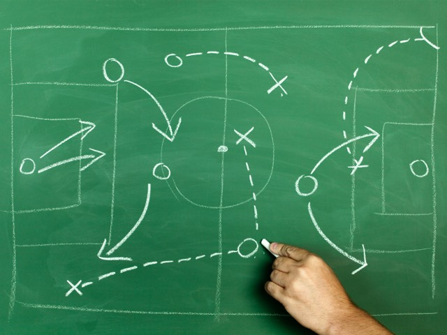

Of Habit Building and Website Creating
If you want to express your creativity in hopes of improving your organisation, you will definitely need to build a habit.
Welcome back to the blog, everyone! I hope you are doing well and are ready to get coding.
Today, we will be setting up the website in a way that allows us to easily maintain it for effective use.
Before we begin, I would like to send my greatest thanks to all of the medical, safety, and technical workers who keep the Earth turning during this COVID-19 pandemic. Moreover, I would like to express my deepest gratitude to the teachers, administrative workers, and IT workers who make online learning possible. These wonderful people allow me to continue working and learning despite the ongoing crisis, thus I owe them my education more than ever.
Is there such a thing as having too much time?
This is Sheldon. Sheldon likes to play with lasers and trains. However, Sheldon knows he needs to do his homework first and keep a healthy routine. Be like Sheldon.
While learning from home renders your day very flexible, the freedom that comes with online school makes way for bad habits to creep in and ruin your potential efficiency. Another prominent issue is the difficulty in differentiating subcategories of the time we now have on our hands whether you study or work. Personally, I found myself wondering:
- "Am I spending enough time on this specific activity?"
- "Am I really on track with my long term goals?"
- "Should I spend more/less time with family/social media?"
1. DEVELOPPING THE WEBSITE HAS TO BE EASY
No point in complicating it. The website is here to assist your time management, hence the name of the blog.2. IT NEEDS TO BOOST YOUR PRODUCTIVITY
In fact, you took on this project to facilitate your organisation. Thus, the viability of your website is proportionate to the ease of its development.3. IT MUST REWARD YOU FOR THE EFFORTS INVESTED
The main motivator will be the pride you will feel looking at your website and realising that you can utilise your HTML skills to help you get organised.- Reading the WHO report on the COVID-19 pandemic
- Emailing friends in another city to compare the amount of hand-sanitiser avaible at the local Shopper's Drug Mart
- ...And completing that homework due in a week(which is an improvement from the last minute essay) yet handing it in at 11:58pm 'cause you live on the edge
In response to this, I started my website and taught my younger sisters to play chess, so I would say things are going great.
So just like last time…
It's time to draw a GAME PLAN!
What is the mindset behind this project?
First, we need to lay down the foundation upon which our website will be built, or in other words, answer the following question:
“How do I convert all of this potential productivity into actual, kinetic productivity?”
Now, I would like to suggest the three following principles the website should adhere to. Should you feel the need to adapt them your way, feel free to do as you wish. The goal here is to set yourself up for success, and I bet you know yourself better than I do!
Making our first web page!
All right! We’ve now got our plans drawn out. Let's get started on web development. The first thing you’ll need is a text editor.
It's tutorial time! We're downloading a text editor then we'll make our first webpage.

Designing the web pages.
All right! We can now move on to making the actual websites. Below I have explained the ideas behind each application and included my versions (also linked in the Dashboard tab). Remember: this is your website and customizability is everything. As you go along, be sure to make it yours. You could start small and change names and styles, but I encourage you to go as far as changing the whole template.
Agenda
The Agenda will apply the basics of HTML and CSS covered in the tutorial, to create a blog-style webpage where you can mark down the events of your week. How about summarising a concept you learnt? Or structuring all of the ideas in a project? The possibilities here are as endless as the fun you'll reap!
Design
HTML
The HTML is a simple page. Just the necessary to display the text and images.
Here is my approach.
JS
No JavaScript yet :)
Dashboard
The Dashboard will serve as a crossroad to link all of the next projects. Also, this is one way to efficiently organise the agenda entries. Next, we’ll make a dashboard that will link every aspect of the website in a convenient way. Temporarily, it will only contain the journal entries, but we will come back often to include the next applications
Design
HTML
The HTML here is not so important as the styling. As long as you have the links to the parts of your website, you should be good to go.
Here is my approach.
Design
In the CSS, we pay attention to the Grid display and the placement of elements on the page. I had a bit of trouble with this but then went for simplicity (unlike for the Agenda).
Here is my approach.
JavaScript
Again None needed
Calendar
It's time to draw up a calendar. Honestly, a calendar is the hallmark of an organised person. You don't need one in every corner of the house, but having one that you can easily refer to. (I write this as I realise: I have 5 of them active and in use!)
After that, it’s planning time! In this first application, we will be exploring the possibilities of Javascript programming through a calendar which will help us visualise dates.
Design
HTML
The HTML for the calendar is not very present. Instead, I decided to generate the date using JS. This is mainly because, as I have come to realise, not every month starts on a Manday.
Here is my approach. The JavaScript code is included in the <script> tag at the bottom
CSS
In the CSS of this app, I made sure to center my content and give a splash of blue to my calendar. You could use an image instead of a solid colour, simply swap out background-color for background-image.
Here is my approach.
JavaScript
The Calendar allows us to get exploring how a simple program can enable us to acheive great things. To start off, we define variables using var and let, while we select elements from our HTML file using query selctors:
document.getElementsByClass("name of class")
document.getElementById("name of id")
Also, we work with the Date object provided by the language to manipulate the days and months.
To-Do list
Life usually introduces you to gigantic projects which become the focus of your time until the due date (clears your plate) renews the endless cycle. As a side effect, one may forget to complete less demanding tasks, say:
Design

HTML
The HTML for this app is dedicated to position the title, the textbox where the todos will be typed.
Here is my approach.
Design
In the CSS, I give the list a colour theme to keep away from the bland black and white look we've all come to hate.
Here is my approach.
Design
Lastly, we will make a to-do list using our newfound skills in Javascript, paired with a browser’s local storage. Interacting with the local storage will enable us to save our list without the help of a database (more on that when time comes). The query selectors learned in the calendar app will make a comeback to help the browser read the input of the textbox and process the buttons.